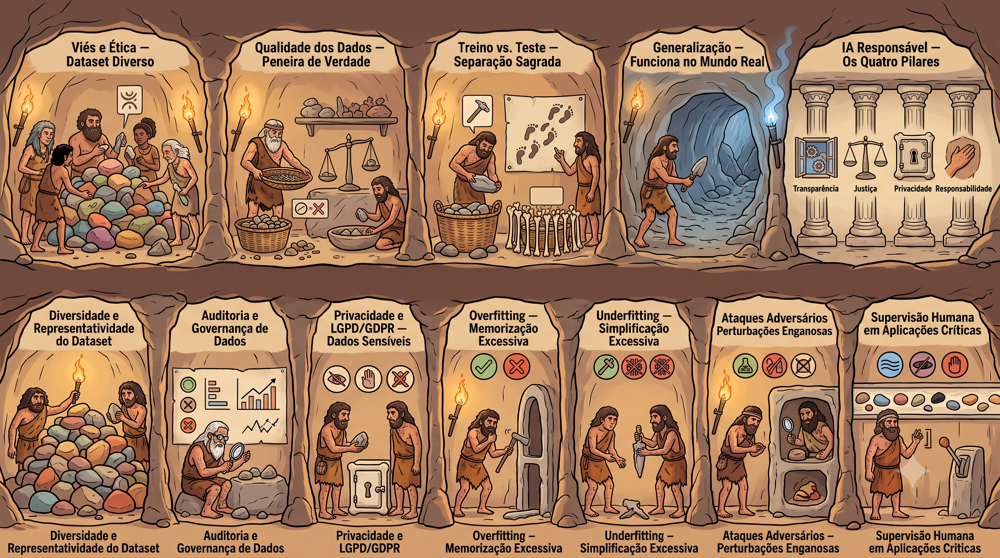

Do dado bruto na pedra ao insight comunicado ao clã. Cada nicho da caverna é um pilar do sistema — Big Data, ETL, Data Lake, Microsserviços, Qualidade e Análise vivem num único mapa visual.
Passe o mouse e clique em qualquer nicho da caverna — 12 conceitos essenciais, todos numa imagem só.
